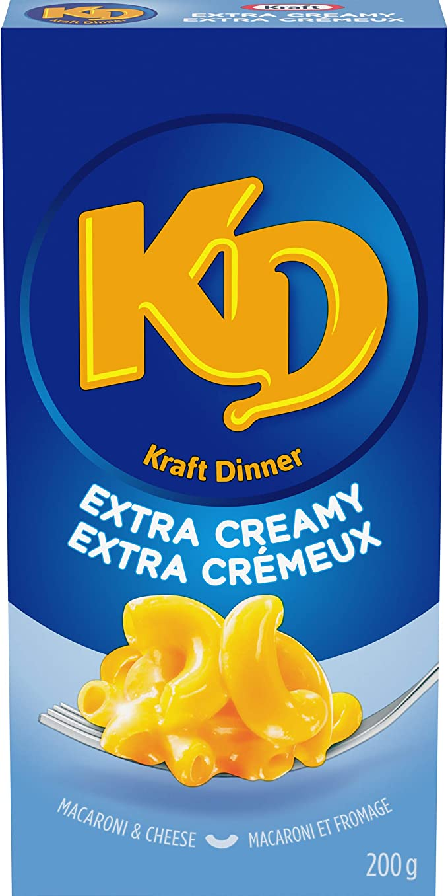

Air Fryer Steak and Mushrooms

Is...is this what we are reduced to?
Description
Perhaps you were having a good day before this. Maybe you thought you would look at recipes that would actually bring a smile to your face, make you wonder what they would taste like. But evil looks you in the eye, drops their voice no higher than a whisper and mutters in your ear, "No. We're reminding you of your university days."
Ingredients
- 1 Box of Kraft Dinner
- 2 tablespoons of cream
- 2 tablespoons of butter
- 20g of cheese chunks
Steps
- Boil water. Toss the Kraft Dinner inside of it. Cook and stir for 7 to 8 minutes.
- Drain the kraft dinner, then return it to the pan.
- Add butter, cream, and cheese sauce from inside the KD box to it. Also add the extra cheese chunks. Mix it.
- It is now done, may god have mercy on your soul.